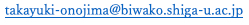

小野島 隆之Takayuki Onojima
博士（情報学）
滋賀大学 データサイエンス・AIイノベーション研究推進センター 講師
Ph.D. in Informatics
Lecturer, Data Science and AI Innovation Research Promotion Center, Shiga University
主要な業績Selected work
-
脳波位相と正答確率の関数推定に向けたロジット変換を用いたガウス過程回帰
小野島 隆之，神保 雅一．統計数理, 74(1), 61-80（2026）
脳波位相と正答確率の関係を、ロジット変換と周期カーネルを用いたガウス過程回帰によって推定する統計モデルを提案。被験者ごとに柔軟に推定でき、試行数の増加に伴う計算量の問題に対処する二項・ロジットモデルも新たに導入した。 Gaussian Process Regression with a Logit Link to Estimate the Relationship between Neural Oscillatory Phase and the Probability of a Correct Response
Takayuki Onojima, Masakazu Jimbo. Proceedings of the Institute of Statistical Mathematics, 74(1), 61-80 (2026)
A statistical model that estimates the relationship between EEG phase and response accuracy by Gaussian process regression with a logit link and a periodic kernel, together with a binomial-logit formulation that keeps the computation tractable as the number of trials grows. -
High-resolution EEG dataset during resting and localized visual stimulation in the lower-left visual field
小野島 隆之，北城 圭一．Data in Brief, 64C, 112400（2026）
安静時および左下視野への局所的な視覚刺激時に記録した高密度脳波データセットを公開したデータ論文。 High-resolution EEG dataset during resting and localized visual stimulation in the lower-left visual field
Takayuki Onojima, Keiichi Kitajo. Data in Brief, 64C, 112400 (2026)
A data paper releasing a high-resolution EEG dataset recorded during rest and during localized visual stimulation in the lower-left visual field. -
A state-informed stimulation approach with real-time estimation of the instantaneous phase of neural oscillations by a Kalman filter
小野島 隆之，北城 圭一．Journal of Neural Engineering, 18(6), 066001（2021）
カルマンフィルタにより脳波の瞬時位相をリアルタイムに推定し、目標とする位相のタイミングで刺激を呈示する脳状態依存刺激法を提案。リアルタイム環境に実装して実験的に検証した。 A state-informed stimulation approach with real-time estimation of the instantaneous phase of neural oscillations by a Kalman filter
Takayuki Onojima, Keiichi Kitajo. Journal of Neural Engineering, 18(6), 066001 (2021)
A proposed brain-state-dependent stimulation method that estimates the instantaneous phase of neural oscillations in real time with a Kalman filter and delivers stimuli at a targeted phase, implemented and validated experimentally in a real-time setting.
現所属Current Positions
-
2025年5月 ～ 現在
滋賀大学 データサイエンス・AIイノベーション研究推進センター 講師 May 2025 – Present
Lecturer, Data Science and AI Innovation Research Promotion Center, Shiga University -
2025年6月 ～ 現在
情報・システム研究機構 統計数理研究所
大学統計教員育成センター 客員講師 June 2025 – Present
Visiting Lecturer, Center for University Statistics Education,
The Institute of Statistical Mathematics
経歴（本務）Employment
-
2022年4月 ～ 2025年4月
滋賀大学 データサイエンス・AIイノベーション研究推進センター 助教 April 2022 – April 2025
Assistant Professor, Data Science and AI Innovation Research Promotion Center, Shiga University -
2019年4月 ～ 2022年3月
理化学研究所 脳神経科学研究センター 基礎科学特別研究員 April 2019 – March 2022
Special Postdoctoral Researcher (SPDR), RIKEN Center for Brain Science -
2018年4月 ～ 2019年3月
理化学研究所 脳神経科学研究センター 研究員 April 2018 – March 2019
Postdoctoral Researcher, RIKEN Center for Brain Science -
2015年4月 ～ 2017年3月
日本学術振興会 特別研究員 DC2（京都大学） April 2015 – March 2017
JSPS Research Fellow (DC2), Graduate School of Informatics, Kyoto University
兼任・客員等Concurrent & Visiting Appointments
-
2024年4月 ～ 2024年9月
総合研究大学院大学 非常勤講師 April 2024 – September 2024
Adjunct Lecturer, The Graduate University for Advanced Studies (SOKENDAI) -
2023年4月 ～ 2026年3月
自然科学研究機構 生理学研究所
神経ダイナミクス研究部門 共同利用研究員 April 2023 – March 2026
Collaborative Researcher, Division of Neural Dynamics,
National Institute for Physiological Sciences -
2023年4月 ～ 2025年3月
情報・システム研究機構 統計数理研究所
統計エキスパート人材育成プロジェクト 第2期研修 研修生 April 2023 – March 2025
Trainee, Statistical Expert Human Resource Development Project (Phase II),
The Institute of Statistical Mathematics -
2023年4月 ～ 2025年3月
情報・システム研究機構 統計数理研究所
大学統計教員育成センター 外来研究員 April 2023 – March 2025
Visiting Researcher, Center for University Statistics Education,
The Institute of Statistical Mathematics -
2022年4月 ～ 2023年3月
自然科学研究機構 生理学研究所
神経ダイナミクス研究部門 特別訪問研究員 April 2022 – March 2023
Visiting Researcher, Division of Neural Dynamics,
National Institute for Physiological Sciences
学位Education
-
2018年3月 博士（情報学）
京都大学 大学院情報学研究科 先端数理科学専攻 博士課程 修了
博士論文：A study on the dynamical role of EEG phase for speech recognition March 2018 Ph.D. in Informatics
Graduate School of Informatics, Kyoto University
Doctoral thesis: A study on the dynamical role of EEG phase for speech recognition -
2014年3月 修士（情報学）
京都大学 大学院情報学研究科 知能情報学専攻 修士課程 修了
修士論文：Neural substrates of EEG phase effect on the intelligibility of speech perception March 2014 M.Sc. in Informatics
Graduate School of Informatics, Kyoto University
Master's thesis: Neural substrates of EEG phase effect on the intelligibility of speech perception
所属学会Scientific Society Memberships
- 日本神経科学学会The Japan Neuroscience Society
- 日本物理学会The Physical Society of Japan
- 情報処理学会Information Processing Society of Japan
- 人工知能学会The Japanese Society for Artificial Intelligence
- Organization for Human Brain Mapping
- Society for Neuroscience
連絡先Contact
〒522-8522 滋賀県彦根市馬場1-1-1
滋賀大学 データサイエンス・AIイノベーション研究推進センター 1-1-1 Banba, Hikone, Shiga 522-8522, Japan
Data Science and AI Innovation Research Promotion Center, Shiga University
滋賀大学 データサイエンス・AIイノベーション研究推進センター 1-1-1 Banba, Hikone, Shiga 522-8522, Japan
Data Science and AI Innovation Research Promotion Center, Shiga University
